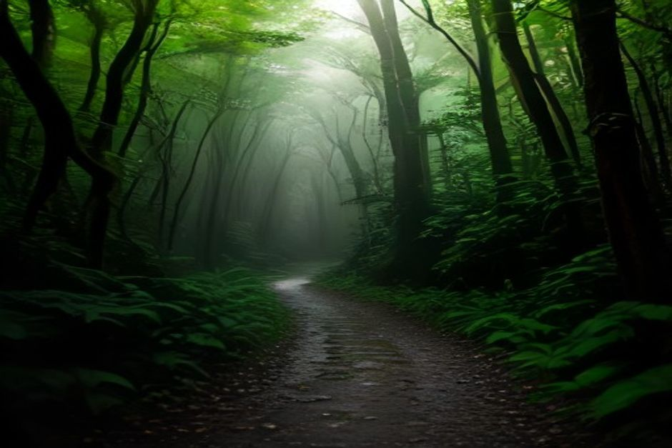

Ribeiro Frio è un puntino di montagna a Madeira, a circa 900 metri di quota, dove la strada verso nord esce dalle nuvole e si infila tra pini e allori. Da qui parte il PR 11, la passeggiata più facile dell'isola che finisca davanti a un panorama vero. Se vi state chiedendo a quanti metri è Ribeiro Frio, quanto si cammina e se serve prenotare, qui trovate tutto in ordine.
Ribeiro Frio in breve: dove, a quanti metri, quanto ci vuole
Ribeiro Frio si trova negli altopiani centrali, a circa 30 chilometri da Funchal. In auto servono 35-40 minuti verso nord lungo la ER103, la strada che sale dalla costa sud verso Faial e Santana.
A quanti metri è? A circa 900 metri sul livello del mare. Il nome significa "ruscello freddo" ed è onesto: l'aria è più fresca e più umida che a Funchal, e il verde è ovunque.
Il paese ruota attorno a un allevamento statale di trote costruito negli anni '40. Oggi c'è un piccolo parco forestale, un caffè-ristorante e l'inizio di due tra i sentieri più conosciuti dell'isola.

PR 11 Vereda dos Balcões: quanto è lungo e quanto è difficile
È piatto, breve e adatto a quasi tutti. Il PR 11 segue la Levada da Serra do Faial per circa 1,5 chilometri a tratta, quindi circa 3 chilometri tra andata e ritorno. Non c'è una vera salita: il dislivello è minimo.
Si cammina dentro una foresta fitta di erica arborea e muschio. Con un po' di fortuna vedrete saettare il regolo di Madeira, un uccellino minuscolo, accanto al sentiero.
Il percorso finisce all'improvviso su una piattaforma di roccia: il "balcone" che dà il nome al luogo. In genere si torna al parcheggio in meno di un'ora e mezza, sosta al belvedere compresa. Bastano scarpe da ginnastica, purché abbiano una suola decente.
Il PR 11 va prenotato? Sì, con SIMplifica
Sì. Ogni sentiero PR numerato di Madeira, Balcões compreso, richiede una prenotazione gratuita a orario sul portale ufficiale SIMplifica. Il sistema serve a limitare l'affollamento e il traffico nei punti di partenza più frequentati.
La prenotazione online richiede un paio di minuti e gli orari si rilasciano in anticipo. Il parcheggio di Ribeiro Frio è davvero piccolo e d'estate si riempie spesso entro metà mattina. Presentarsi senza prenotazione significa rischiare di restare fuori.
- Prenotate lo slot prima di partire da Funchal.
- Arrivate presto, oppure scegliete un orario meno gettonato.
- Tenete la conferma sul telefono: in montagna la rete può mancare.
Cosa si vede dai Balcões
Nelle giornate limpide lo sguardo corre lungo la valle della Ribeira da Metade fino alle due vette più alte dell'isola: il Pico Ruivo, 1.862 metri, e il Pico do Arieiro, 1.818 metri. In mezzo, pendii terrazzati e laurisilva senza interruzioni.
Sono poche le vedute dell'isola in cui le due cime si vedono insieme, e non da sotto una delle due. Per questo i fotografi amano un luogo raggiunto con una camminata così corta.
Quando andare
A quella quota le nuvole passano spesso e cambiano in pochi minuti. In genere la mattina offre più probabilità di cielo aperto del pomeriggio, ma nessuno può garantirvelo. Se il panorama è coperto, aspettate un po': spesso la nebbia si apre da sola.
La trota di Ribeiro Frio: vale una sosta anche senza camminare
All'inizio del sentiero c'è il Centro de Aquicultura, un vero allevamento di trote iridee. Si visita gratis e non c'è biglietteria. Vasche di pietra scendono a terrazze nel parco, all'ombra di camelie e di alti til.
Dieci o quindici minuti bastano per vederlo con calma. Il ristorante accanto serve la trota che alleva: alla griglia, con le mandorle, è il modo in cui la ordinano da queste parti. Anche chi non vuole camminare trova che valga la sosta in un giro dell'isola in auto.
Come organizzare la giornata: Ribeiro Frio con il Pico do Arieiro
Le due tappe stanno sulla stessa strada di montagna. Dal parcheggio dell'Arieiro a Ribeiro Frio si impiegano circa 20 minuti d'auto.
- Alba o mattina presto al Pico do Arieiro.
- Colazione e giro alle vasche delle trote a Ribeiro Frio.
- Passeggiata fino ai Balcões, con lo slot SIMplifica già prenotato.
- Discesa verso la costa.
È una mezza giornata che tocca il meglio delle montagne centrali senza una sola salita ripida.
Cosa portare
Più dello scarpone contano gli strati: una giacca antipioggia leggera e una felpa. Il sentiero della levada è piatto e curato, ma l'altopiano è più fresco e più umido di Funchal e le nuvole arrivano in pochi minuti.
Portate contanti o una carta per il ristorante. L'allevamento, oltre alle vasche, ha solo un piccolo negozio.
E il mare? Una giornata in montagna e una in barca
Ribeiro Frio mostra la stessa isola vulcanica vista da 900 metri invece che dal livello del mare. Se la montagna è la vostra mattina, la costa è un buon modo per chiudere il viaggio.
Con una gita in barca privata con Chifbay dalla Marina do Funchal, pontile C, la barca è solo per il vostro gruppo, fino a 5 persone, con due skipper di Madeira. Le uscite di giorno costeggiano Cabo Girão e le calette oltre, con cibo e bevande a bordo. Il prezzo è per tutta la barca.
A Madeira, il panorama più grande non richiede sempre la salita più dura.
Ribeiro Frio ripaga chi lascia la costa per un pomeriggio: un ruscello freddo, un allevamento di trote e un'ora e mezza di cammino tranquillo verso una delle viste di montagna più belle dell'isola.